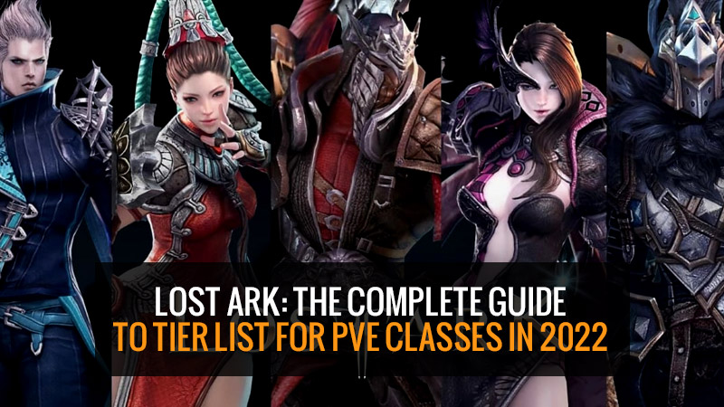

Lost Ark: The complete guide to tier list for PVE classes in 2022
In Lost Ark, what is the level of each course? What is the best PVE class? Choosing the best PVE career will not only improve your Lost Ark experience but also affect the player's mood in the game! In this article guide, we're going to list the levels of each class in the Lost Ark game in PVE for 2022. Discuss how each class differs and choose the best class for the player's playstyle. If you're new to Lost Ark and you're having trouble choosing a career course, here's your best course guide in 2022!

Lost Ark: PVE Classes Tier List | 2022
Lost Ark features the following 5 Classes: Warrior, Martial Artist, Gunner, Mage, and Assassin. First of all, let's list Lost Ark all characters class PVE level list in 2022!
| Tier | Classes |
| S | Gunlancer, Wardancer, Berserker, Gunshlinger, Lance Master |
| A | Deathblade, Shodow Hunter, Artillerist, Scrapper, Striker, Sharpshooter, Sorceress, Scouter, Arcana, Summoner, Destroyer |
| B | Soulfist, Deadeye, Reaper |
| C |
|
| Support | Bard, Paladin |
Related: Lost Ark PVP Tier List in 2022!
Lost Ark: All Classes Coefficient Guide
| Class | Stamina | Defense | S x D | Rank |
| Gunlancer | 2.5 | 1.2 | 3 | 1 |
| Destroyer | 2.3 | 1.15 | 2.645 | 2 |
| Scrapper | 2.3 | 1.1 | 2.53 | 3 |
| Berserker | 2.2 | 1.1 | 2.42 | 4 |
| Paladin | 2.1 | 1.1 | 2.31 | 5 |
| Wardancer | 2.2 | 1.05 | 2.31 | 5 |
| Striker | 2.2 | 1.05 | 2.31 | 5 |
| Lance Master | 2.2 | 1.05 | 2.31 | 5 |
| Soulfist | 2.1 | 1.05 | 2.205 | 9 |
| Deathblade | 2.2 | 1 | 2.2 | 10 |
| Artillerist | 2.1 | 0.95 | 1.995 | 11 |
| Sharpshooter | 2.1 | 0.95 | 1.995 | 11 |
| Deadeye | 2 | 0.95 | 1.9 | 13 |
| Arcana | 2 | 0.95 | 1.9 | 13 |
| Sorceress | 2 | 0.95 | 1.9 | 13 |
| Summoner | 2 | 0.95 | 1.9 | 13 |
| Shodow Hunter | 2 | 0.95 | 1.9 | 13 |
| Gunshlinger | 2 | 0.9 | 1.8 | 17 |
| Scouter | 2 | 0.9 | 1.8 | 17 |
| Reaper | 2 | 0.9 | 1.8 | 17 |
| Bard | 1.9 | 0.9 | 1.71 | 21 |
Lost Ark: Ministerial and Difficulty Guides for Each Class
| Class | How It Plays (Brief Summary) | PVE Difficulty |
| Berserker |
Hit enemies and construct up your Runaway identity gauge, which, when activated, significantly increases your movement speed, attack velocity, and Crit Probability for any long time period of time. The class feels strong and hasty with Runaway on and slow and sluggish when it can be off. Techniques possess a great deal of built-in flinches super armor, which enable you to brush off attacks that would otherwise interrupt others. It needs class engraving Berserker's Secret Move and high Specialization stat to feel excellent to play. Talent kit is incredibly very good at 'pub stomping' in PVP but struggles towards skilled players who can be working with far more competitive courses, particularly with later classes which have been launched. |
★☆☆☆☆ Very easy to pick up, but high cooldowns and long animations can be challenging in faster-paced fights. |
| Destroyer |
Attacking enemies builds up Core resources which can be expended with 'Liberation' type skills to improve them. Attacks are slow and deal big damage. Low mobility but very tanky with powerful mitigation tools to ignore some mechanics. Skill kit is very competitive in 3v3 PVP and this class consistently ranks high even despite balance patches. |
★★★☆☆ This class is not for everyone. The playstyle is often offputting and the sluggish mobility of the class can prove challenging for some. |
| Gunlancer |
This is not a assistance or a tank class, nevertheless it does possess a Taunt and that is applied to interrupt specified boss patterns and hold enmity for any handful of seconds prior to the boss returns to random aggro. Discounts consistent injury although constructing up the Shield gauge with blue attacks or dealing heavy burst injury with red ones. Well-liked 'blue' make makes use of the Fight Posture class engraving to deal great damage with shield-generating techniques to preserve higher HP overshields. The 'red' Lonely Knight class engraving is also well known and it orients the class additional in the direction of burst damage, Weak Stage damage, and stagger damage, but significantly less defense. Ok at PVP but struggles towards newer classes that have large mobility and really hard CC within their kits. |
★☆☆☆☆ Combat Posture Gunlancer is extremely safe and easy to play. ★★☆☆☆ Lonely Knight Gunlancer is much less tanky but can still take advantage of the shield to attack uninterrupted. |
| Paladin |
Delivers extremely steady injury buffs though dealing a little bit a lot more harm than Bard.He is worse than Bard at maintaining a staff alive but better at delivering damage buffs. The disparity among these two will not be major, so each classes are interchangeable for that support position without having any difficulty. His assistance Awakening may be the 2nd a single that's a bit irritating while you have to be capable to entry Rohendel and comprehensive the 2-4 hour extended quest to unlock it. |
To be populated. |
| Wardancer |
An Agile class that builds up Ki orbs by hitting enemies with capabilities. Ki orbs are expended to cast 'Ult:' skills. A choice class constructs working with the Beginner's Mind class engraving ignores 'Ult:' skills altogether to only attack applying empowered standard techniques. She can maneuver in and from fight immediately and deals the vast majority of her damage inside a six 2nd self-buff window, auto-attacking in among and using smaller filler techniques. One particular on the most oppressive classes in PVP that can pin down an enemy, but lacks super armor, forcing the operator to play and engage very very carefully. Substantial ability ceiling. |
★★☆☆☆ Overall simple, you pretty much just hold major skills until your buff skills are off cooldown. |
| Scrapper |
The heavy-hitting mana-less class balances attacks between the Ki (yellow) and Shock (green) sources. A single form of talent expends one resource and generates the other. Her Taijutsu make is agile, dealing steady damage when holding her mobile. Favored in faster-paced encounters. The Shock Regeneration build leans in the direction of heavy-hitting shock-consuming skills. It is much less mobile and inflicts satisfying bigger numbers. Scrapper is the most balanced class during the game, and it typically feels like the game is balanced about her. She is lower volatility and least more likely to be impacted by stability modifications. She is often relatively competitive in PVP like a consequence. Though significantly less oppressive than Wardancer, she's far tankier using a few super armor possibilities when engaging, and capable of deleting enemies with a number of her attacks with the exact same time. |
I've never played this at endgame so I can't rate this. /td> |
| Soulfist |
Casting competencies expend Power, that is this class' model of Mana which automatically regenerates at a set tempo. Falling to 0 or reducing Power locks you out of your capabilities until eventually, it regenerates back to one thousand. Her identity has 3 stages that empower her, with each stage staying additional effective and lower duration compared to the former. Following the 3rd stage (the strongest one), she is unbuffed to get a time period of time exactly where she is weakest. Common establish utilizes the Heaven Defying Body class engraving to constantly skip straight to the 3rd stage and regenerate it after it expires considerably faster. She's a close-mid ranged fighter that deals devastating injury when she's in her empowered state but is weak when she is not. Ideal acknowledged for her hallmark Awakening talent, the strongest single-hit attack during the game. She has often been extremely impressive in PVP. Among the most versatile ability sets that have expansive solutions to poke, engage, and burst down enemies. |
★★★★☆ Abstract playstyle. Close-ranged fighter but lacks super armor, and so is easily interrupted. Skill management is important as is decision-making on when to activate empowerment or use Awakening skill. |
| Striker |
This is certainly the male gender unlock of Wardancer. They share twelve techniques that are precisely the same, but 6 that happen to be distinct, unique Awakening competencies, various engravings, and distinctive Specialty scaling. Striker combines Wardancer's two synergy expertise into one particular talent, providing him one total added assault slot. His class engraving is heavily oriented towards consuming Ki orbs to empower his attacks. His one-of-a-kind techniques are extremely effective combined with this, so this makes tends to run meta. He can feel awkward to play as a result of the nature of owning to land a back attack that has a charging dash talent. He won't do extra all-around injury than Wardancer, and he tends to be slower resulting from not working Agility. He is really enjoyable to play, and he can make significant damage numbers. |
★★★☆☆ Slightly harder to play than Wardancer due to lack of agility in the meta build and skills that can be annoying to consistently land on the enemy’s back. |
| Arcana |
As she hits enemies, she builds up assets until she draws Tarot cards. She can hold up to 2 Tarot cards at any given time, and each and every Tarot card has one-of-a-kind effects. All Tarot cards are positive results, using the exception of one particular which can either enhance or reduce your damage to get a brief time. Her endgame playstyle revolves close to dealing burst hits with two of her capabilities that eat stacked card markers on enemies struck by her smaller-sized techniques, but the way you choose to attack or hold your capabilities is determined by which Tarot cards you draw. Similar to Gunlancer, she is potent early on ahead of the introduction of other classes in PVP. She can quickly be pinned down by a number of the later classes which can be launched. |
★★★★☆ Squishy class and requires some impromptu decision-making. |
| Summoner |
She has the advantage of having plenty of harm dealt by her summons. But she is just not all summon damage, rather just a good chunk of her injury comes from them. She nevertheless demands to cast capabilities routinely. The place it comes in handy is in the course of the studying course of action of any raid, the player can target on dodging attacks, and at the very least several of her injury is automated even if she is preoccupied with steering clear of mechanics. She is amongst the greatest prog classes within the game since of this. Related to Gunlancer, she is effective early on prior to the introduction of other classes in PVP. She can effortlessly be pinned down by several of the later classes that happen to be released. |
I've never played this at endgame so I can't rate this |
| Sorceress |
This is the traditional mage knowledge. Sorceress excels at long ranged direct damage handling spells. She has two playstyles, a single which focuses all over high burst injury and very low mobility, and one particular which focuses on continual sustained damage and high mobility. Those that perform the former must have fantastic mastery of every personal boss mechanics to learn how you can position yourself and when to unload your burst. The latter is a great deal extra lenient but is not able to do burst injury. Sorceress' function in PVP is really a prolonged ranged enabler. While she does not do as significantly direct injury as her counterpart Summoner, she has access to superior capabilities to poke and peel, as well as very substantial mobility as long as she holds onto her identity gauge. |
★★★☆☆ For Ignition build, most of the difficulty comes from learning the bosses more so than learning the rotations. There are a few animation cancels to learn, but nothing that's very difficult. ★☆☆☆☆ For Reflux build, just cast spells. It's that easy. You can Blink in a pinch. Not for players suffering from arthritis. |
| Bard |
Taking part in her as DPS isn't really an alternative ahead of T3 Legion Raid gear. Provides consistent shielding and attack buffs to get together members. When hitting enemies, she builds assets which she can expend to cast an extra impressive harm buff or a heal (she ought to decide on which 1 to implement based on the raid situation). Necessitates her class engraving Urgent Rescue for your heal to be any decent. In PVP, she can burst down enemies with her only significant damage ability, Soundholic, but outside of that focuses on trying to keep allies alive and buffing them, although debilitating enemies and getting tough to kill. |
★★☆☆☆ She's easy to play. Just don't overlap buffs that should be staggered. Time your attack buffs with clear damage windows when bosses are vulnerable. Despite being a low HP and defense coefficient, she tends to be very tanky due to not using Grudge engraving and opting for Heavy Armor engraving |
| Deadeye |
Cycles amongst pistols, shotguns, and sniper rifle stances. Pistols are for debuffing and mobility, the shotgun is for principal harm, and sniper rifle is for secondary harm and long-ranged poking. Considering that shotguns will be the main harm source, this class isn't to become mistaken as being a ranged class in spite of making use of guns. It spends a good deal of time close to the boss, and also needs to be worried about positioning because most expertise benefits from Back Attacks. Features a secondary establish that only makes use of pistols. Incredibly entertaining, but novel and weaker than the construct that utilizes all weapons. Has a large amount of really quick engagement choices and will poke from afar in PVP. Catching an enemy, if permitted to go unchecked, can deal huge injury as a result of combos. Higher talent ceiling. |
★★★★★ It’s a really squishy class that requires you to develop muscle memory to properly stance switch while monitoring cooldowns of 16 skills (all other classes only use around 8 skills). Getting used to proper positioning on bosses can also be highly challenging. ★☆☆☆☆ The Handgunner pistol-only build is super easy since it doesn’t weapon swap at all and has low cooldowns. Fun to play, simple to pick up. |
| Artillerist |
A tanky artillery-based class that discounts high damage by way of detonations. The strongest capabilities have a time delay on them, wherever you cast them along with a couple of seconds later on the attack lands. This will need some planning to acquire employed to. Identity skill allows the Artillerist to enter Siege mode transformation, offering it accessibility to an emergency shield as well as a powerful laser. Features a pretty robust individual shield that will aid it to endure by means of selected mechanics. Solid zoning-oriented PVP kit with all the choice to engage from mid-range and follow-up with exceptionally strong and elaborate set-ups to deal large harm to targets before they recover from stun results. |
★★★★☆ Similar to Destroyer, the playstyle is not for everyone. Depending on the boss, it can require an additional layer of spatial thinking to understand how to effectively place your bombs. |
| Sharpshooter |
One of many only correct ranged classes within the game. The vast majority of his harm is concentrated in only a number of skills that happen to be high-commit and long-ranged. Specials substantial damage from this handful of capabilities. Skills generate Silverhawk gauge which may be utilized to summon the bird Silverhawk to battle alongside you, however, the preferred playstyle of this class utilizes the class engraving to meet the bird in the enemy the moment it is offered to gain a buff. Because of the ranged playstyle and medium-length cooldowns, Sharpshooter is usually a class that will concentrate on dodging mechanics although finding possibilities to use their long-ranged techniques uninhibited. Not an extremely ranked PVP class, but is arguably among the most irritating classes inside the game to perform against. Does an excellent job of bullying in mid-upper to decrease divisions. |
★★☆☆☆ I found the attack rotation to be pretty basic and a little boring at times. It’s a generally safe class. |
| Gunslinger |
Of her 18 competencies, 6 of them are unique from Deadeye (2 from every stance), as well as the two of her Awakening techniques, her class engravings, also as her specialization stat. They swap the specialization result for shotgun and sniper rifle for Gunslinger, and that is a significant purpose why her sniper rifle is so effective in comparison with Deadeye. Her tripods may also be special and take out the Back Assault attribute from her shotgun capabilities in return for gaining the bonuses from Back Attack passively on them. This permits her to assault from any orientation and not really need to often reposition towards the back like Deadeye. Whereas Deadeye has an exceptionally effective shotgun, Gunslinger features a relatively effective shotgun and sniper rifle, offering her a lot of long-ranged selections if she can't get near to a boss in the given minute. This versatility is often a main motive why she's regarded preferable over Deadeye since it makes her far less complicated to perform even when her potential damage is slightly lower. |
★★★☆☆ She's squishy but has high mobility and does not need to rely on attacking from any specific direction. Also much of her damage is ranged and isn't exclusively melee like Deadeye. ★★☆☆☆ The Hunting Time engraving greatly simplifies her kit by removing the shotgun from her skills in exchange for higher Crit Chance on pistol and sniper skills. |
| Deathblade |
To be populated. |
To be populated. |
| Shadowhunter |
hadowhunter |
hadowhunter |
Related: The complete guide to function of all currencies and get ways in Lost Ark!